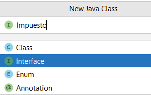
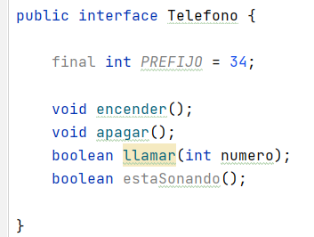
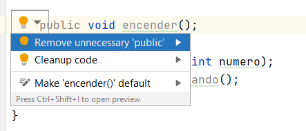
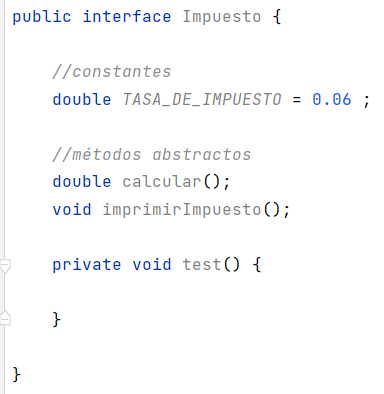
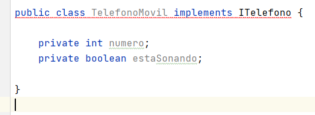
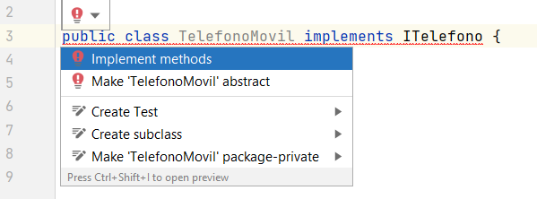

⚕️Interfaces
❇️ Definición
Una interfaz es una clase que define métodos pero no los implementa. La idea es proporcionar un comportamiento común que pueda ser utilizado por varias clases que implemente una interfaz. No se pueden instanciar.
Una interfaz es una lista de constantes y signaturas de métodos. Los métodos no están implementados en la interfaz (no hay cuerpo de método).
❇️ ¿Por qué se utilizan las interfaces?
Hay principalmente tres razones para usar la interfaz.
- Para lograr la abstracción.
- Dan algunas ventajas de herencia múltiple, sin las desventajas de la herencia.
- Para obtener un mayor desacoplamiento del código.
Las interfaces son muy usadas, de hecho, muchas de las librerías de Java hacen un uso extensivo de las interfaces.
Sabemos que Java tiene herencia única, es decir, una clase hija hereda solo de una clase padre. Esto, por lo general, es suficiente para codificar nuestras aplicaciones. Aunque a veces sería conveniente la herencia múltiple, donde una clase hija pudiera heredar características de varias clases padres. Pero esto puede llegar a ser confuso. ¿Qué sucede cuando dos padres tienen diferentes versiones del mismo método?
Una interfaz describe aspectos de una clase distintos de los que hereda de su padre. Una interfaz es un conjunto de requisitos que la clase debe implementar.
❇️ Interfaz vs Herencia
Una clase puede extender de una clase padre para heredar los métodos y las variables de instancia de ese padre.
Una clase también puede implementar una interfaz al incluir métodos y constantes adicionales. Sin embargo, los métodos en la interfaz deben escribirse explícitamente como parte de la definición de la clase. La interfaz es una lista de requisitos que debe incluir la definición de clase (a través de código explícito, no a través de herencia).
Por ejemplo, una clase Coche podría extender de la clase Vehiculo. La herencia le da todos los métodos y variables de instancia. Pero si Coche también implementa la interfaz Impuestos, entonces su definición debe contener código para todos los métodos enumerados en Impuestos.
En Java las interfaces también representan una relación ES-UN.
Una clase extiende de un solo padre, pero puede implementar varias interfaces.
❇️ Cómo crear una interfaz
Para crear una interfaz en IntelliJ, haremos lo siguiente:
- Botón derecho en el paquete de nuestra aplicación --> New ---> Java class y seleccionamos Interface.


En Java, los nombres de las interfaces, por lo general, deberían ser adjetivos o nombres que describen el concepto abstracto que representa la interfaz. La primera letra de cada palabra separada en mayúscula. En algunos casos, las interfaces también pueden ser sustantivos cuando presentan una familia de clases, p. List o Map.

Una vez creada la interfaz definiremos los métodos que desarrollarán las clases que implementen esta interfaz.
El compilador de Java agrega las palabras clave:
public abstractcuando se define un método, por lo que se puede omitir en los encabezados de los métodos.public static finalen el caso de las constantes.

Warning
Los métodos NO pueden ser PRIVATE ni PROTECTED.
Se estructura de forma que primero se sitúan las constantes y luego los métodos.
Si ponemos public IntelliJ nos avisa:


Una vez creada la interfaz, necesitaremos clases que la implementen, para ello usaremos la palabra reservada implements en la nueva clase. Por ejemplo, vamos a crear la clase TelefonoMovil:

Observamos que IntelliJ nos genera un error, ya que debemos definir o implementar los métodos que habíamos declarado en la interfaz. Si hacemos click en el error, IntelliJ nos ofrece crearlos:


IntelliJ nos ha creado TODOS los métodos que habíamos definido en la interfaz, como vemos con la anotación @Override, ya que los está sobreescribiendo puesto que estaban declarados en la interfaz.
Note
TODOS los métodos definidos en la interfaz se han de implementar en la clase, no podríamos implementar solo algunos.
Veamos como probar el código en nuestra clase Main:
public class MainTelefono {
public static void main(String[] args) {
Impuesto impuesto = new TelefonoMovil(123456789);
impuesto.imprimirImpuesto();
}
}
Warning
Las interfaces NO PUEDEN INSTANCIARSE, tienes que usar una clase que haya implementado la funcionalidad definida por la interfaz.
❇️ Novedades
-
Desde Java 8, podemos tener métodos default y métodos estáticos en una interfaz.
-
Desde Java 9, podemos tener métodos privados en una interfaz.